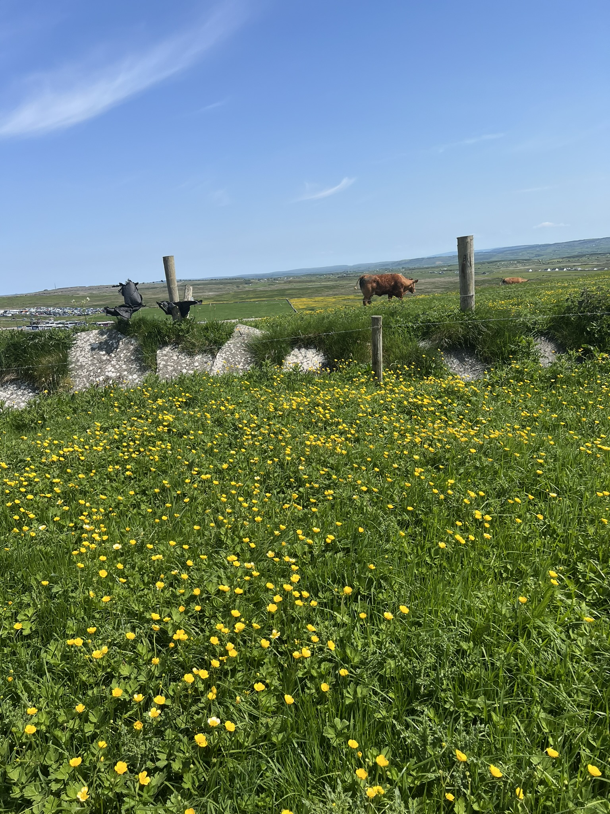

Exhibit th.Views of the castle Pictures of the indoor exhabits.

Cows around the walk. A selfie with a friend.The views from Cliffs of Moher Views of Cliff of Moher
Dublin
Dublin offers an incredible experience. Known for its vibrant culture, historic landmarks, and lively pubs, Dublin provides a perfect blend of modern excitement and historical charm. From visiting the famous Trinity College and learning about its history to enjoying sweet treats around every corner, there's something for everyone in this beautiful city. Combining a visit to Dublin with a trip to these stunning cliffs makes for an unforgettable Irish adventure..